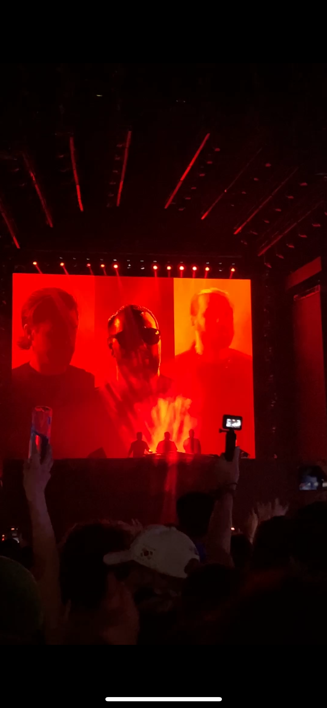
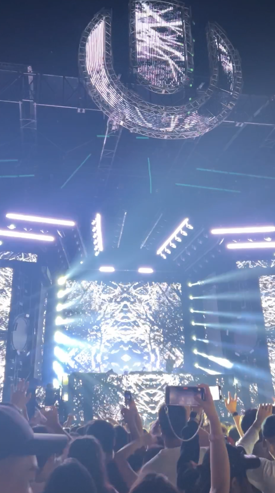
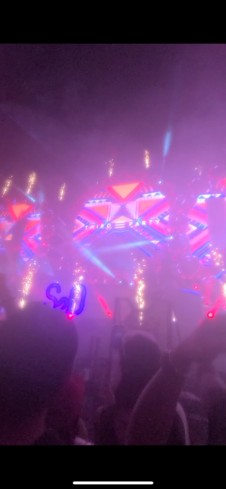
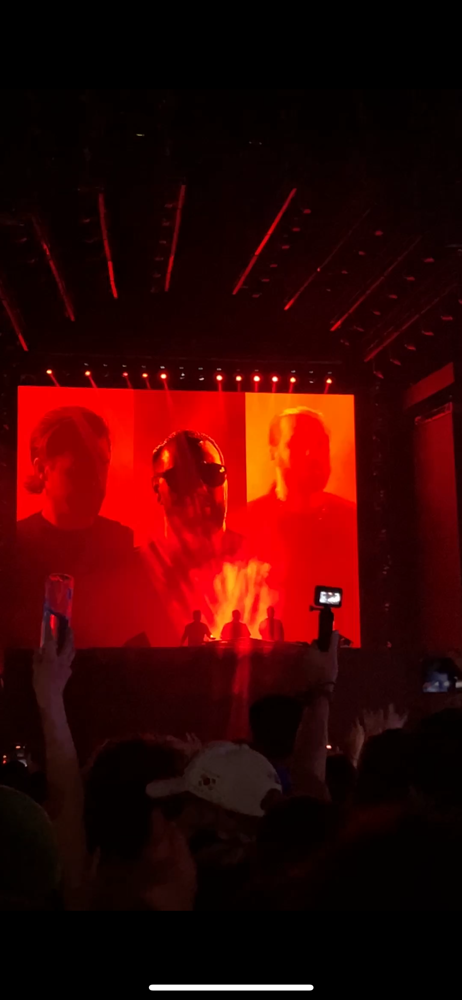
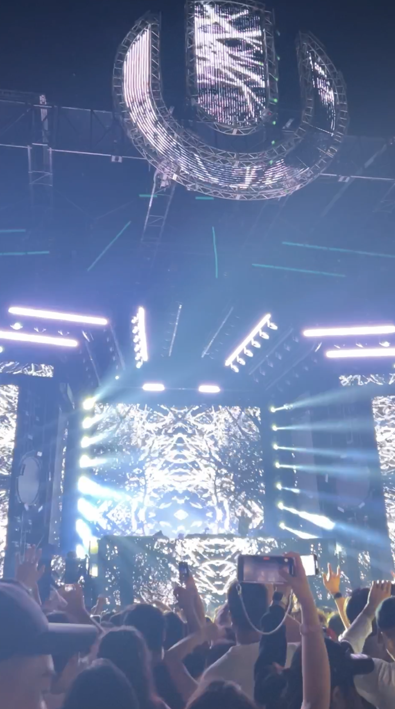
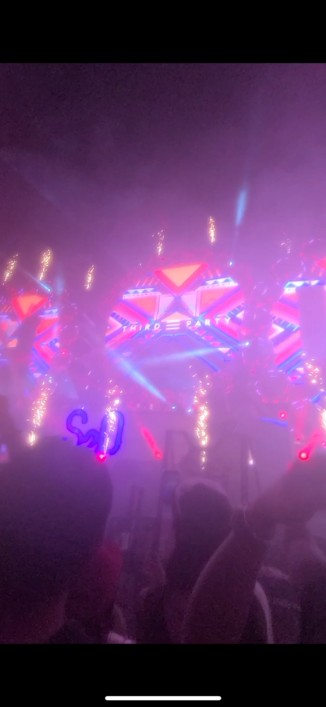

인생 영화

드니 빌뇌브의 SF 영화인 듄: 파트 2를 가장 인상 깊게 보았습니다.
처음에는 단순한 SF 영화로 생각하였지만, 종교와 정치, 그리고 전쟁에
대한 고뇌가 담겨있어 영화에 몰입할 수 있었습니다.
디지털 기기로 영화를 소비하는 시대에 영화의 경계가 점점
희미해졌다고 느끼는 중, 듄: 파트2 같은 작품을 통해 영화만이 가진
경렬한 경험과 예술성을 느끼게 되었습니다. 그 외에도, SF 영화를 좋아해서 다 찾아보려고 하는 편입니다~!